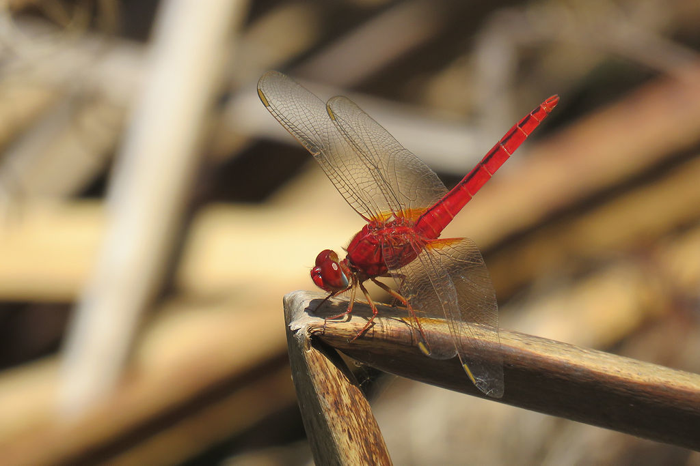

- Only mature males earn the name. Young males and females are a muted yellow-brown — the vivid blood-red develops gradually as a male matures, signaling to females and rival males alike that he is ready to compete.
- Florida got this species by accident. The most likely pathway was the aquatic plant or aquarium trade; the first confirmed U.S. sighting was near Miami in 1975, and the species has spread steadily across the southern half of the peninsula since then.
- On a scorching summer day, watch for a perched scarlet skimmer to tilt its abdomen straight up toward the sun — a move called the obelisk posture. By pointing the tip of the abdomen at the sun, the dragonfly minimizes the body surface exposed to direct solar radiation and avoids overheating during midday territory patrols.
- The orange patches at the base of all four wings act like tiny built-in stained-glass windows. They appear in every individual regardless of age or sex, making them the single most reliable field mark for separating this species from similar-looking native skimmers.
A medium-sized skimmer dragonfly; males run about 40 to 43 mm (roughly 1.6 in) in body length. The build is fairly robust for a skimmer, with a broad thorax and a moderately tapered abdomen. Wings are held flat and outstretched at rest, as is typical of the family.
Unmistakable when mature: the entire body — thorax, abdomen, and tail appendages — is blood-red. The eyes are red above and purplish on the sides. A thin dark line runs along the top of the abdomen. Orange-amber veining is visible near the base of all four wings.
Olive-brown to yellowish overall, with a pale stripe running along the top of the thorax. The same orange wing-base veining seen in males is present and is one of the most reliable field marks for the species regardless of sex or age. The abdomen has a dark dorsal line.
The roseate skimmer male is pink rather than red, and lacks the dark dorsal stripe. Needham's skimmer males are more orange-yellow than red. The orange wing-base veining combined with the pale thorax stripe is the best combination mark for females and immatures, separating them from similar-looking species.
Essentially silent as far as human observers are concerned. Dragonflies produce no true vocalizations; the faint dry rustle of wings in flight is the only sound this species makes.
On a mature male, the all-red body — including the eyes — is conclusive. For females and young males, look first at the wing bases: the orange veining near the base of all four wings, paired with a pale stripe down the thorax, distinguishes this species from most lookalikes. Both sexes tend to perch low on emergent vegetation at the water's edge and return repeatedly to the same stem.
Adults are aerial predators, catching small flying insects — mosquitoes, midges, gnats, small flies, and other soft-bodied prey — in flight using their spiny legs as a basket. Aquatic nymphs prey on small invertebrates in the water, including aquatic insect larvae and other tiny organisms they can stalk and ambush among submerged vegetation.
Check any sunny open shoreline, especially where low emergent vegetation — grasses, sedges, or low shrubs — grows right at the water's edge. Males will be perched conspicuously at eye level or lower, making short territorial sallies and returning to the same stem. Working slowly along a pond margin on a warm sunny morning is the most reliable approach.
Active during daylight hours on warm days; like most dragonflies, they are most visible during the warmer months and become less active during the coolest parts of winter. In Manatee County, adults are present for a long season — roughly spring through fall — with peak abundance in summer. Cool or overcast days significantly reduce activity.
Observe from a close but calm distance — males perched at the water's edge are remarkably tolerant of a slow approach. Moving quickly or casting a shadow over a perched individual will flush it. No other precautions needed.


- © William Hull (CC-BY-NC), via iNaturalist
- © Maria Escobar (CC-BY-NC), via iNaturalist
- © David McSwain (CC-BY-NC), via iNaturalist
- © Christine Leamon (CC-BY-NC), via iNaturalist